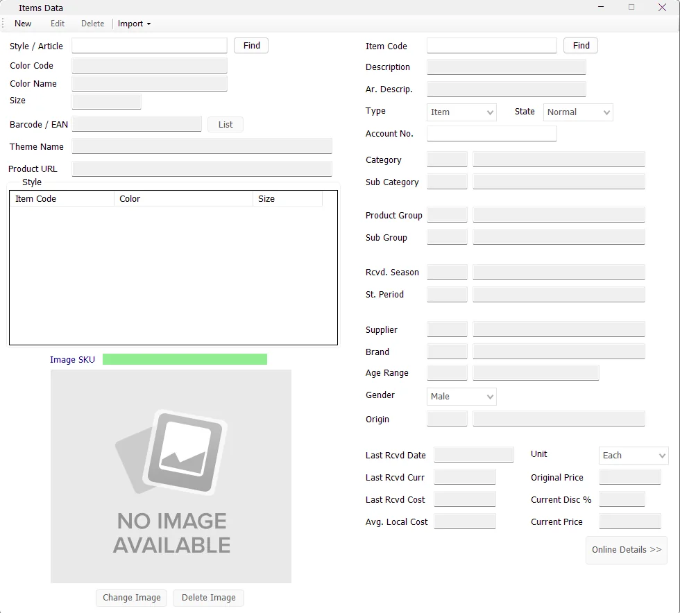
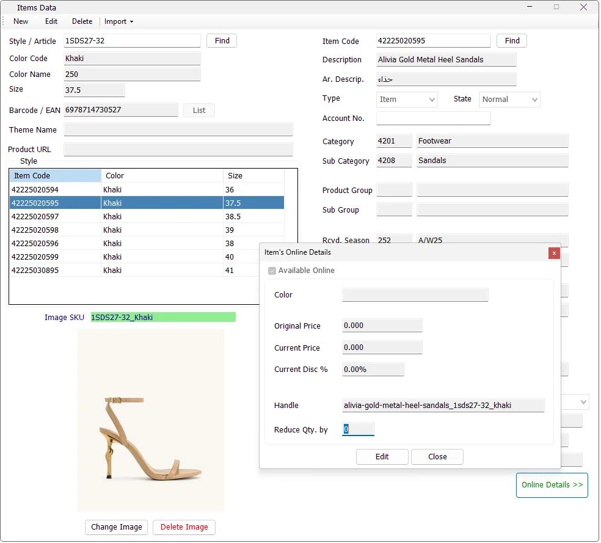

Search
Review every size/color in a style
Find the Style and use the Style grid to switch between individual Item Codes.
Manage Items is the central merchandise master in IMS. It connects each Item Code to its Style/Article, Color, Size, barcode, descriptions, merchandise hierarchy, supplier and brand, demographic classifications, origin, pricing, online information and product image. These fields are reused across Sales, Inventory, Purchasing, Sell Through and Main Sales reporting.


| Search | Behavior |
|---|---|
| Style / Article → Find | Finds the style and loads its Item Code / Color / Size variants into the Style grid. |
| Item Code → Find | Finds the exact Item Code and also loads the other variants belonging to the same Style. |
| Style grid | Select another Item Code in the grid to switch the details panel to that Color/Size variant. |
| Field | Meaning |
|---|---|
| Style / Article | The product style/article that groups related Color/Size Item Codes. |
| Color Code | The merchandise color code. |
| Color Name | Readable color description associated with the color code. |
| Size | The item's size or size code. |
| Barcode / EAN | The item's primary barcode. |
| List | Opens the additional-barcode list for the selected Item Code when secondary barcodes exist. |
| Theme Name | Optional merchandise Theme classification used by supported item and reporting workflows. |
| Product URL | Online/product URL stored for the Style/Color SKU. |
| Image SKU | IMS builds the image key as Style_ColorCode. |
| Field | Purpose |
|---|---|
| Item Code | Unique IMS item identifier. |
| Description | English item description. |
| Ar. Descrip. | Arabic item description. |
| Type | Classifies the record as an Item or Service. |
| State | Current IMS item state, such as Normal, Sale or Outlet according to the configured item-state master. |
| Account No. | Financial/account mapping used where the item type and financial workflow require it. |
The item master stores the classifications that later become criteria and Group By dimensions in IMS reports.
| Field | Relationship |
|---|---|
| Category | Main merchandise category. |
| Sub Category | Subcategory under the selected Category. |
| Product Group | Main product group. |
| Sub Group | Subgroup under the selected Product Group. |
| Rcvd. Season | Received-season / received statistical-period classification associated with the item. |
| St. Period | Statistical/selling period displayed for the item and used by supported reporting. |
| Supplier | Supplier master assigned to the item. |
| Brand | Brand under the selected Supplier. |
| Age Range | Age classification used by merchandise analysis. |
| Gender | Gender classification used by merchandise analysis. |
| Origin | Country of origin. |
Several classifications are hierarchical. Changing the main Category resets the Sub Category, changing Product Group resets Sub Group, and changing Supplier resets Brand so the dependent field remains consistent with its parent master.
The lower-right receipt/cost fields provide a quick reference to the item's latest purchasing and average-cost information.
| Field | Meaning |
|---|---|
| Last Rcvd Date | Date of the latest recorded purchase/receipt information for the item. |
| Last Rcvd Curr | Currency used by the latest purchase/receipt information. |
| Last Rcvd Cost | Latest purchase price shown using that purchase currency's format. |
| Avg. Local Cost | Average item cost shown in the IMS local-currency format. |
| Unit | Item unit of measure. |
| Field | Meaning |
|---|---|
| Original Price | Original/full retail price. |
| Current Price | Current selling price. |
| Current Disc % | Calculated as 1 − Current Price ÷ Original Price when Original Price is greater than Current Price; otherwise 0%. |
When pricing is edited, IMS keeps the item's selling state aligned with the current versus original price and updates the relevant item pricing records.
Before saving, IMS checks that the Item Code is unique, that the barcode is not already assigned as either a primary or secondary barcode, and that the Style/Color/Size combination is not already assigned to another Item Code.
The Item Code itself remains fixed when editing an existing record.
During Edit mode, Apply to Style lets a maintenance user apply appropriate changes to all Item Codes belonging to the selected Style rather than changing only one Color/Size variant.
When Apply to Style is selected, Color Name, Color Code, Barcode and Size remain variant-specific and are not edited through the style-wide operation.
| Option | Effect |
|---|---|
| Apply to Style + Price Only | Applies Original Price, Current Price and the resulting item state across the Style. |
| Apply to Style without Price Only | Applies the shared style-level information after IMS asks for confirmation. |
Every item has a primary Barcode / EAN. IMS can also maintain additional barcodes in the secondary-barcode list. Barcode validation checks both places so the same barcode is not assigned to different Item Codes.
IMS stores product images by Image SKU = Style_ColorCode. This means all Size variants of the same Style and Color share the same image.
IMS automatically converts the image to JPEG, auto-orients it, removes unnecessary metadata, resizes it to fit the IMS image dimensions and compresses it to the supported storage size. A 62 × 62 thumbnail is also created for reports and other thumbnail views.
Click Delete Image and confirm. Deleting the image removes the Style/Color image record without deleting the item itself.
Online Details >> opens the selected item's online-information screen. The button is shown in green when the item is currently marked Online and red when it is not.

The Online Details window keeps the e-commerce-specific values that can differ from the normal IMS retail item information.
| Field | Purpose |
|---|---|
| Available Online | Marks whether the selected item is available to the online integration. |
| Color | Online color value for the selected Item Code. |
| Original Price | Original online price. |
| Current Price | Current online selling price. |
| Current Disc % | Calculated automatically from Original Price and Current Price when the original price is greater than the current price. |
| Handle | Online product handle associated with the selected Item Code. |
| Reduce Qty. by | Quantity reduction value used by the online item workflow. |
| Save choice | What IMS updates |
|---|---|
| No — selected Item Code only | Updates Available Online, online Color, Original Price, Current Price, Handle and Reduce Qty. by for the selected Item Code. |
| Yes — entire Style | Updates Available Online, Original Price, Current Price and Reduce Qty. by for every Item Code belonging to the Style. |
After saving, IMS records the affected Item Code or Style for the online-update workflow so the change can be processed by the integration service.
The Product URL on the main Items screen is stored at the Style/Color SKU level, matching the same Style_ColorCode structure used by item images.
IMS protects transaction history. An item can be deleted only when it has not already been used in relevant stock, purchasing, sales, depreciation, adjustment or transfer transactions.
If IMS finds previous transaction history, the item is retained and the user is informed that it cannot be deleted.
The Import menu provides administrative bulk-maintenance tools. IMS validates the selected file before committing changes and writes a validation log when the source contains invalid data.
| Import option | Purpose |
|---|---|
| Import Items | Creates items in bulk and can optionally update existing item records. When updating existing items, Item Code, Style, Color and Size are retained. |
| Import Price Changes | Updates current selling price and state in bulk. Files can target an Item Code, a complete Style, or a Style + Color combination. |
| Import Online Prices | Updates online original price, online current price and Online status for item/style selections used by the online integration workflow. |
| Import Images | Imports Style/Color images in bulk from local file paths or HTTP/HTTPS image sources. |
Use Import → Import Items with a header row and tab-delimited text (.txt, .tsv or .tab). Prepare the supplied Items_Master.xlsx template in Excel, then save as tab-delimited text; IMS does not read Excel workbooks directly. Preserve identifiers and leading zeros as text.
The legacy format has exactly 23 columns. The extended format has exactly 30 columns: the same first 23 positions, followed by seven online/metadata fields. Import is positional, not a column-mapping wizard. Keep every column and tab separator, including empty optional cells. The extended format also checks the header sequence; use the headings below.
| # | Template heading | Required | New item: 23-column format | New item: 30-column format |
|---|---|---|---|---|
| 1 | ItemCode | Yes | Empty cell rejected | Empty cell rejected |
| 2 | Style | Yes | Empty cell rejected | Empty cell rejected |
| 3 | ColorName | No | Empty text | Not set |
| 4 | ColorCode | Yes | Empty cell rejected | Empty cell rejected |
| 5 | Size | Yes | Empty cell rejected | Empty cell rejected |
| 6 | Barcode | Yes | Empty cell rejected | Empty cell rejected |
| 7 | EnglishDescription | No | Empty text | Not set |
| 8 | ArabicDescription | No | Empty text | Not set |
| 9 | ItemType | Yes | Empty cell rejected | Empty cell rejected |
| 10 | ItemState | No | Not set | Not set |
| 11 | Category | No | Not set | Not set |
| 12 | SubCategory | No | Not set | Not set |
| 13 | ProductGroup | No | Not set | Not set |
| 14 | ProductSubGroup | No | Not set | Not set |
| 15 | ReceivedSeasonId | No | Not set | Not set |
| 16 | SupplierId | No | Not set | Not set |
| 17 | BrandId | No | Not set | Not set |
| 18 | AgeRangeId | No | Not set | Not set |
| 19 | GenderId | No | Not set | Not set |
| 20 | OriginCode | No | Not set | Not set |
| 21 | UnitCode | Yes | Empty cell rejected | Empty cell rejected |
| 22 | OriginalRetailPrice | Yes | Empty cell rejected | Empty cell rejected |
| 23 | CurrentRetailPrice | Yes | Empty cell rejected | Empty cell rejected |
| 24 | Theme | No | Not in file; not set | Not set |
| 25 | Handle | No | Not in file; not set | Not set |
| 26 | IsOnline | No | Not in file; false | False |
| 27 | ReduceByQty | No | Not in file; 0 | 0 |
| 28 | WebColor | No | Not in file; not set | Not set |
| 29 | WebOriginalPrice | No | Not in file; not set | Not set |
| 30 | WebCurrentPrice | No | Not in file; not set | Not set |
The two new-item columns describe empty-cell results. Columns 24–30 exist only in the extended file; for a new item created from a 23-column file, IMS still assigns the omitted fields the defaults shown above. “Not set” means the field has no supplied value. Leave optional cells empty. Numeric zero is a supplied value, not an empty cell: an ItemState of 0 must exist in the company master data. ItemCode and Barcode allow 15 characters, Style 30, ColorCode 50 and Size 10. ItemType must be 1 (Item) or 2 (Service); UnitCode must identify an existing unit; both retail prices are required decimals. References must exist, SubCategory must belong to Category, ProductSubGroup to ProductGroup, and Brand to Supplier. ReceivedSeasonId is text up to three characters; other reference codes are integers. Theme allows 100 characters, Handle 150, WebColor and ColorName 50, and descriptions 100. IsOnline accepts true/false or 1/0; ReduceByQty is a small integer. Prices allow up to six decimal places without thousands separators.
Choose Yes at the update-existing-items question to update editable metadata and prices. Item Code, Style, Color and Size remain unchanged, and the primary barcode is retained. A valid different barcode for the same item can become an additional barcode. Choose No to create new items without updating existing metadata; additional barcodes can still be registered. Cancel stops the import.
| Empty optional cell when updating | 23 columns | 30 columns |
|---|---|---|
| Columns 10–20: ItemState, Category, SubCategory, ProductGroup, ProductSubGroup, ReceivedSeasonId, SupplierId, BrandId, AgeRangeId, GenderId, OriginCode | Clears the value | Preserves the existing value |
| Columns 7–8: English/Arabic description | Sets empty text | Preserves the existing description |
| Column 3: ColorName | Identity information is not updated | Identity information is not updated |
| Columns 24–30 | Not supplied; existing values preserved | Empty cells preserve existing values |
| Required columns 1, 2, 4, 5, 6, 9, 21, 22, 23 | Rejected | Rejected |
For an existing item, supplied ItemType, UnitCode and retail prices replace their editable values when you choose Yes. Supplied optional descriptions, references and columns 24–30 also replace their editable values. The identity and primary-barcode rules above apply in both formats even when their cells are populated. With No, neither format changes existing metadata or prices.
Hypothetical example: these adjacent columns keep an empty SubCategory between two tabs. The ProductGroup stays in column 13. This is a fragment, not a complete import file:
Category SubCategory ProductGroup
10 20Use all 23 or all 30 positions in the actual file. The whole file is checked for field types/lengths, required cells, duplicate Item Codes/barcodes/Style–Color–Size combinations and company references before saving. Correct the reported -ValidationLog.txt beside the source, then import again. Review the resulting new/existing-item counts. If completion is uncertain, inspect the item records and import log before retrying.
Save these Excel templates as tab-delimited text with their header row. Every row must have the same number of columns as the header. Item Code targets one item; Style targets all its variants; Style plus ColorCode targets the sizes of that color.
| Template | Columns in order |
|---|---|
| PriceChanges_ByItemCode.xlsx | ItemCode, ItemState, CurrentRetailPrice |
| PriceChanges_ByStyle.xlsx | Style, ItemState, CurrentRetailPrice |
| PriceChanges_ByStyleColor.xlsx | Style, ItemState, CurrentRetailPrice, ColorCode |
| OnlinePrices_ByItemCode.xlsx | ItemCode, WebOriginalPrice, WebCurrentPrice, IsOnline |
| OnlinePrices_ByStyle.xlsx | Style, WebOriginalPrice, WebCurrentPrice, IsOnline |
| OnlinePrices_ByStyleColor.xlsx | Style, WebOriginalPrice, WebCurrentPrice, ColorCode, IsOnline |
The online Style/Color template also accepts the historical final pair IsOnline, ColorCode when those headings identify the order. Online price imports require both prices and True or False for IsOnline. Retail price imports use a valid ItemState and current retail price; they do not replace the original retail price. These dedicated price templates do not use the optional-empty-cell rules of Items Master. Duplicate keys, unmatched items and invalid values are reported before saving; review the confirmation when a current price is equal to or above its original price.
Save ItemImages.xlsx as tab-delimited text with a header row. The image importer reads the first two columns:
| Column | Value |
|---|---|
| SKU | The IMS Style_ColorCode image key. |
| Image Src | A local image path or an HTTP/HTTPS image URL. |
IMS validates duplicate SKUs, confirms that the SKU exists in the item master, compresses the image and creates both the main image and thumbnail. Failed or skipped rows are written to an import error log.
Item maintenance and the Item toolbar follow the logged-in user's manage item data permission. Users without that maintenance permission can still use the screen as allowed by their IMS access policy, but protected New/Edit/Delete/Import and image-maintenance actions are disabled.
The classification fields on Items are maintained as separate IMS masters:
| Item field | Master |
|---|---|
| Category / Sub Category | Manage → Categories |
| Product Group / Sub Group | Manage → Product Groups |
| Age Range | Manage → Age Ranges |
| Gender | Manage → Genders |
| St. Period | Manage → Statistical Periods |
Keeping these values in shared masters is what lets the same classifications be reused consistently by Main Sales, Sell Through and Purchasing reports.
Manage → Sale Seasons can temporarily apply a Sale price to selected Item Codes. While a Sale Season is active, IMS uses the policy's sale price as the current selling price and places the affected merchandise in the Sale item state. The Sale Season also controls whether the item should return to its original/full price when the policy ends.
Manage → Special Offers can target merchandise by exact Item Code, Style or Style/Color. The offer importer resolves those values against the Item master before saving the promotion.
A normal Special Offer does not replace the Item master definition. The From Price List option stores offer-specific promotional prices separately, while Sale Seasons are the module used for scheduled item markdown prices that change the current sale price/state.
Find the Style and use the Style grid to switch between individual Item Codes.
Edit one variant, choose Apply to Style and use Price Only when the change should affect style pricing only.
Add one Style/Color image and IMS makes it available to all Size variants of that Style and Color.
Use Import Items for validated bulk creation and Import Price Changes or Import Images for specialized updates.
This screen is intended for normal merchandise items. Non-merchandise Service Items are maintained separately in Manage → Service Items. Both belong to the IMS item master, but Service Items use a simplified definition and are identified by Type = Service.